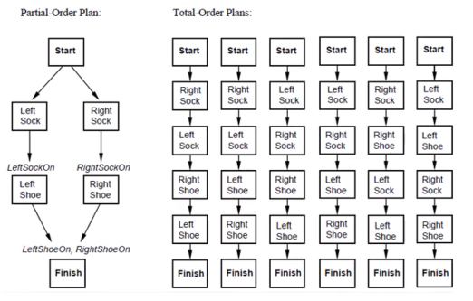

Example
Simple planning problem
{kind=link}
This simple planning problem is that you have to put on these garments in a specific order to achieve the goal of being fully clothed.
Partial Order Plans (POP) are a type of planning algorithm where the order of steps is not completely fixed. Instead, there are conditions that must be met in order to execute a step. These conditions can depend on other steps or be independent of them.
In terms of the sock and shoe problem, a POP plan might look like this:
Put on the left sock.
Put on the right sock.
Once the socks are on, put on the left shoe
Once the right sock is on, put on the left shoe
Annotation correction
You can use the tool to check annotations for errors and correct them if necessary. For this purpose, a correct domain and problem description is required. A simple example can be found at examples/checking_annotation.
$ acheck check shoes_d.pddl shoes_p1.pddl shoes.csv -l shoes_d.pddl shoes_p1.pddl
The workflow typically looks like this:
Click
checkfor checking the annotation (Navbar)checkwill always perform a save at firstNow all errors are getting marked (Editor)
Fix the error manually or by using a suggestion for correction (Output)
Repeat until all errors are fixed
Domain creation
In addition, the tool can also be used to support the creation of domains. There is an example for this in examples/creating_domain.
$ acheck check shoes_d_preset.pddl shoes_p1.pddl creating_domain/shoes.csv -l shoes.csv
Resetting
If you want to reload the original files just delete the output folder and restart the tool, otherwise the tool will always refer to the saved backup that was created on the first start.